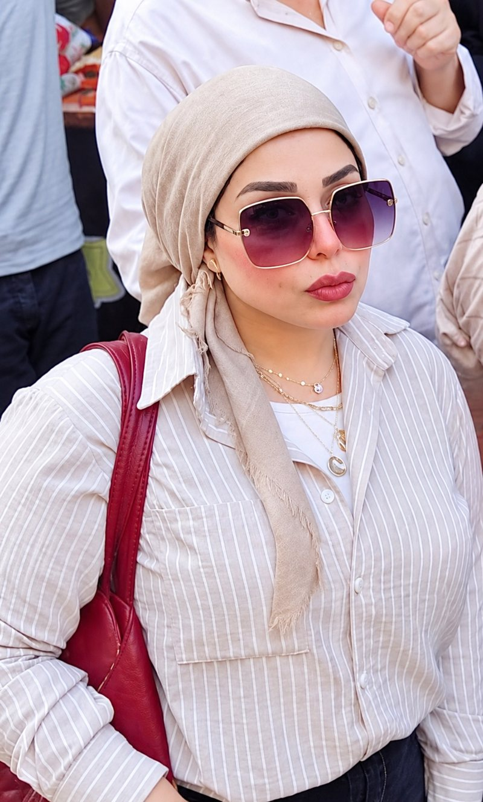
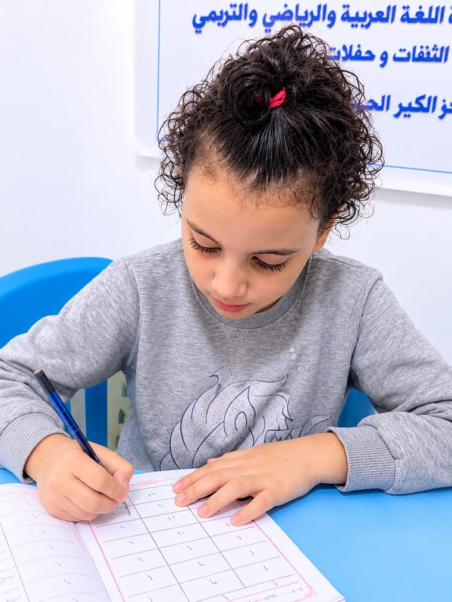
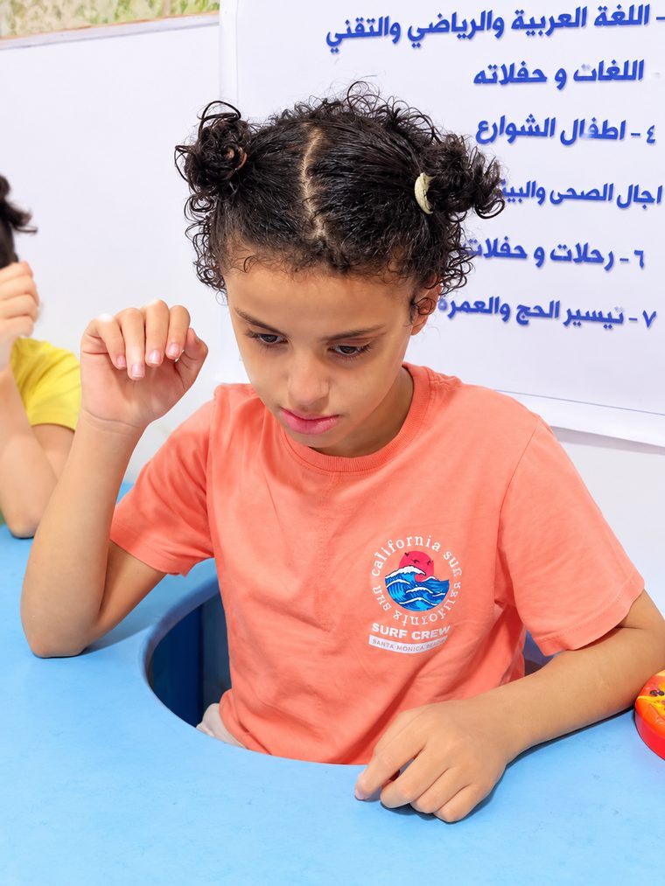
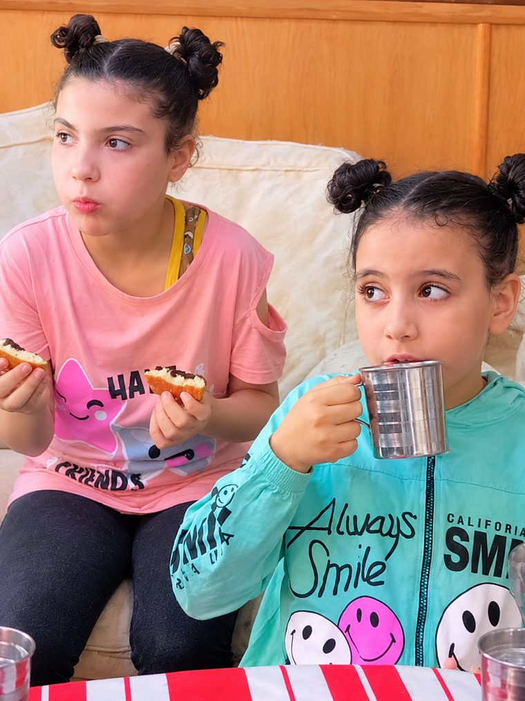

برنامج التخاطب
تعديل النطق والكلام وزيادة الحصيلة اللغوية.
أخصائية تربية خاصة ومدربة تخاطب
كل طفل جواه قصة نجاح مستنية اللي يسمعها ويفهمها. أنا هنا عشان أساعد كل أم تسمع كلمة «ماما» بوضوح.
أنا نورهان السعيد قطب، أخصائية تربية خاصة ومدربة تخاطب. مؤمنة إن كل طفل جواه قصة نجاح، سواء كان من ذوي الاحتياجات الخاصة أو طفل طبيعي محتاج اللي يوجهه صح.
اللي بقدمه مش مجرد جلسات؛ هو برنامج متخصص في التربية الخاصة بيعتمد على أحدث الأساليب التعليمية والتأهيلية.

دمج الأطفال في المجتمع بشكل فعلي.
خطة تناسب قدرات كل طفل واحتياجاته.
الوصول لأعلى مستوى من الاستقلالية والثقة بالنفس.
أطفال ذوي الاحتياجات الخاصة والأطفال الطبيعيين.
تنمية الكلام والفهم والتعبير.
استراتيجيات تعليمية تناسب الطفل.

تدريب على التركيز وضبط السلوك.
تأهيل وتواصل ودمج تدريجي.

نقيّم كل حالة ونحدد المسار المناسب.
تأسيس وتنمية المهارات اللغوية والسلوكية والدراسية.

برامج متخصصة بأحدث الأساليب التعليمية والتأهيلية.
تعديل النطق والكلام وزيادة الحصيلة اللغوية.
تنمية الكلام والفهم والتعبير عند الطفل.
تأهيل وتواصل ودمج تدريجي في المجتمع.
تدريب على التركيز وضبط السلوك.
استراتيجيات تعليمية حديثة تناسب الطفل.
للأطفال الطبيعيين: تنمية المهارات اللغوية والسلوكية والدراسية.
رحلة واضحة من أول جلسة.
فهم حالة الطفل واحتياجاته.
أهداف واضحة تناسب الطفل.
تطبيق الخطة بأساليب حديثة.
قياس التقدم وتعديل الخطة.
إجابات سريعة على أكتر الأسئلة.
تواصلي معنا على واتساب وهنحدد لك الميعاد المناسب.
أطفال التأخر اللغوي وصعوبات التعلم وفرط الحركة وتشتت الانتباه والتوحد وغيرها، وكمان الأطفال الطبيعيين للتأسيس.
بنبني خطة فردية لكل طفل بعد التقييم، وبيتحدد شكل الجلسات حسب احتياجه.
يختلف من طفل لطفل، وبيعتمد على الحالة والالتزام بالخطة ومتابعة الأهل في البيت.
أكيد، بنأسس الأطفال وننمي مهاراتهم اللغوية والسلوكية والدراسية.
طبعًا، تابعيني على تيك توك وفيسبوك لتشوفي الحالات والنصائح.